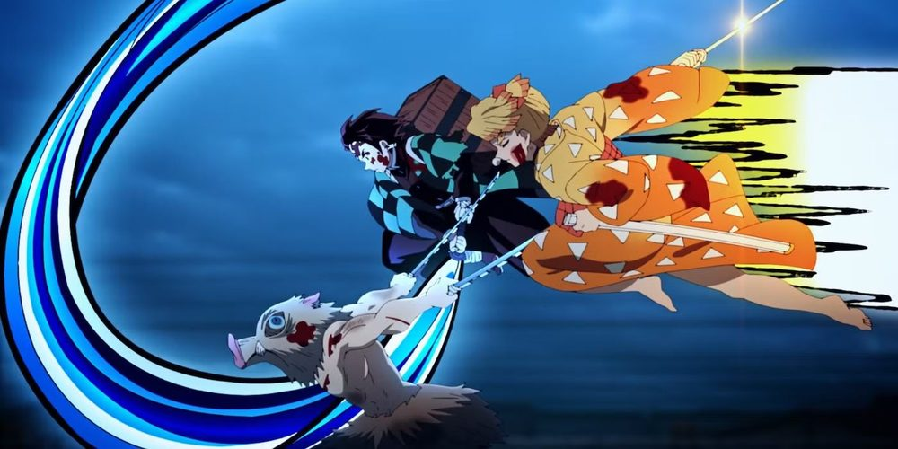

Breathe and Live 1934 呼吸して生きる
Sistema de RPG de mesa de Demon Slayer (Kimetsu no Yaiba) — criado por Nautilus, com emendas de SunlightYellow. Tradução não oficial para português, reorganizada em hipertexto para leitura rápida.
O que é este sistema? Breathe and Live 1934 é um RPG de mesa fan-made ambientado no universo de Demon Slayer, dez anos após a derrota de Muzan Kibutsuji. Os jogadores usam um d20, como em outros RPGs populares, e interpretam Espadachins Caçadores, usuários de Demonificação, Kakushi de suporte ou até Demônios, enfrentando uma nova era de trevas no Japão de 1934.
1 · Comece Aqui
O caminho recomendado para quem chega pela primeira vez: monte a ficha primeiro, depois aprenda as regras de combate — nessa ordem as coisas fazem mais sentido.
2 · Escolha uma Classe
Quatro caminhos de jogo — cada um muda completamente como as batalhas são travadas. Veja a comparação completa antes de decidir.
Personagens híbridos (Kakushi que despertam a Respiração, ou Caçadores que sobrevivem a uma infecção) usam as regras de Multiclasse.
3 · Técnicas de Respiração
O coração do sistema: 14 estilos canônicos, 3 estilos originais do módulo e 11 estilos adaptados do suplemento Limiar Crescente — cada um com formas, custos de vigor e habilidade especial. Comece pela visão geral para entender as regras de uso e a criação de formas próprias.
4 · Progressão
Como o personagem cresce depois da criação: perícias de patente, slots de estudo e os quatro marcos de maestria (agora concedidos majoritariamente por conquista narrativa, não por número de patente).
5 · Equipamento
6 · O Mundo de 1934
Sobre esta wiki
Esta wiki é uma tradução e reorganização em hipertexto do documento fan-made “Breathe and Live 1934 — Demon Slayer Tabletop System” (172 páginas), criado por Nautilus e emendado por SunlightYellow. O material original é um trabalho de fãs, sem afiliação oficial com Koyoharu Gotouge, Shueisha ou Ufotable. Algumas seções do documento original estão incompletas (marcadas como em construção pelo autor) e estão sinalizadas ao longo da wiki. Tradução feita com o auxílio de IA generativa por @yume fernandes, em julho de 2026. A navegação foi reorganizada em agosto de 2026 — veja o relatório de reorganização e o relatório de balanceamento fornecidos à parte.